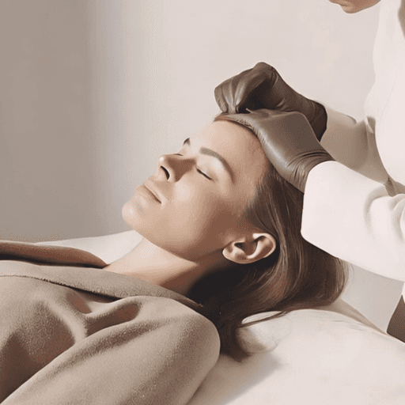
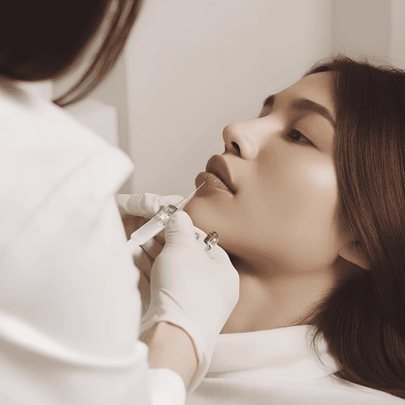
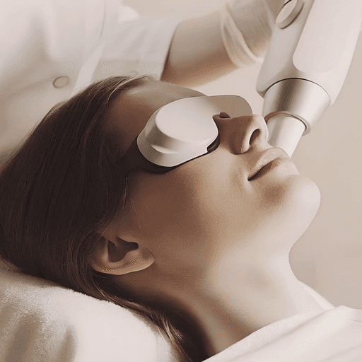
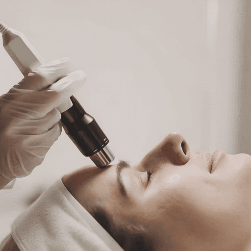

Услуги и процедуры
Дерек Чрагян подбирает методы эстетической коррекции и ухода по состоянию кожи, показаниям и вашим задачам.
Посмотреть процедуры
Инъекции и коррекция
Ботулинотерапия, объёмная коррекция, работа с качеством кожи и малоинвазивные методики.

Ботулинотерапия Лоб, межбровье, область вокруг глаз. Botox Full Face.
Ботулинотерапия и Botox Full Face
Инъекционная коррекция мимических морщин и отдельных проявлений избыточной мышечной активности. Botox Full Face — вариант комплексного плана коррекции нескольких зон. Сочетание зон и объём вмешательства врач определяет индивидуально.
Зоны коррекции
- Лоб
- Уменьшение выраженности мимических морщин лба.
- Межбровье
- Коррекция мимических складок между бровями.
- Область вокруг глаз
- Коррекция «гусиных лапок» у наружных уголков глаз.
- Положение бровей
- Ограниченная коррекция положения бровей по показаниям.
- Уголки рта
- Коррекция опущения уголков рта по мышечному типу, по показаниям.
- Подбородочная мышца
- Коррекция её гиперактивности.
- Десневая улыбка
- Коррекция избыточного обнажения десны при улыбке по показаниям.
- Жевательные мышцы
- Коррекция гипертонуса по индивидуальным показаниям.
Контурная пластика Губы, скулы, подбородок и другие зоны лица и шеи.
Коррекция губ
Коррекция объёма, формы и контура губ, а также асимметрии. Процедура направлена на более гармоничное соотношение губ с другими чертами лица. Желаемую форму и допустимый объём коррекции обсуждают с врачом.
Коррекция скул
Восполнение недостаточного или утраченного объёма в области скул и средней трети лица. Помогает скорректировать плоские или недостаточно выраженные скулы и связанные с потерей объёма изменения пропорций.
Коррекция подбородка
Коррекция недостаточно выраженного, скошенного или асимметричного подбородка. Процедура позволяет изменить его форму и проекцию с учётом профиля и пропорций нижней трети лица.
Коррекция висков
Восполнение западения височных областей, в том числе при возрастной потере объёма. Коррекция направлена на восстановление более плавных контуров верхней трети лица.
Коррекция овала лица и углов нижней челюсти
Объёмная коррекция контура нижней челюсти, недостаточно выраженных углов и отдельных проявлений асимметрии. Процедура направлена на изменение пропорций и очертаний нижней трети лица по индивидуальным показаниям.
Контурная коррекция зоны брылей
Коррекция отдельных участков потери объёма и неровностей контура нижней трети лица. В некоторых случаях позволяет визуально смягчить выраженность «брылей». Возможности метода ограничены при значительном избытке и опущении тканей.
Бланширование колец Венеры
Поверхностная инъекционная коррекция горизонтальных складок и мелких морщин шеи, известных как «кольца Венеры». Врач подбирает подходящий препарат и технику введения с учётом особенностей кожи этой области.
Коллагеностимуляция Radiesse и полимолочная кислота.
Коллагеностимуляция Radiesse
Процедура с препаратом на основе гидроксиапатита кальция, также известным как «Радиесс». Применяется при снижении плотности и упругости кожи и отдельных видах потери объёма. В зависимости от техники и разведения может сочетать объёмную коррекцию со стимуляцией образования собственного коллагена.
Коллагеностимуляция полимолочной кислотой
Инъекционная методика для коррекции постепенной потери объёма, снижения плотности кожи и возрастных изменений. Конкретный препарат и план процедур подбираются врачом с учётом состояния тканей и зоны воздействия.
Инъекции для качества кожи Биоревитализация, мезотерапия, коллагенотерапия, PRP.
Биоревитализация
Инъекционная процедура для обезвоженной кожи, ощущения стянутости, снижения эластичности и мелких морщин. Направлена на улучшение увлажнённости и текстуры кожи. Препарат и протокол подбираются в зависимости от её состояния.
Мезотерапия
Инъекционное введение препаратов, состав которых подбирается под конкретную задачу. Может применяться при тусклом тоне и снижении качества кожи, а при отдельных протоколах — в комплексной терапии проблем кожи головы и выпадения волос.
Коллагенотерапия
Процедура с коллагенсодержащими препаратами при снижении упругости, изменении текстуры кожи и возрастных изменениях. Направлена на улучшение качества кожи и поддержку её восстановления. Возможности метода зависят от состава препарата и выбранного протокола.
Плазмотерапия PRP
Процедура с плазмой, полученной из собственной крови пациента и подготовленной по соответствующему протоколу. Может применяться для улучшения качества кожи, восстановления после отдельных процедур и в комплексной терапии некоторых форм выпадения волос. Эффект зависит от показаний и индивидуальной реакции.
Субцизия рубцов Малоинвазивная коррекция втянутых рубцов.
Субцизия рубцов
Механическое освобождение втянутого атрофического рубца от соединительнотканных тяжей, фиксирующих его к подлежащим тканям. Может применяться при отдельных рубцах постакне и сочетаться с другими методами коррекции рельефа. Это отдельная малоинвазивная методика, не предполагающая обязательного введения препарата.
Аппаратные процедуры
Лифтинг лица, световые и лазерные методики, микроигольчатое воздействие и коррекция контуров тела.
Аппаратный лифтинг лица Ultraformer, Volnewmer, Oligio.
Ультразвуковой лифтинг Ultraformer
Методика, также обозначаемая как SMAS-лифтинг, с воздействием фокусированного ультразвука на заданной глубине. Применяется при начальных и умеренных проявлениях птоза и снижении чёткости контуров лица. Выраженность результата зависит от исходного состояния тканей.
Монополярный RF Volnewmer
Радиочастотный нагрев тканей для ремоделирования коллагена при снижении упругости, начальной дряблости и менее чётком овале лица. Процедура направлена на постепенное улучшение плотности кожи; параметры определяются по показаниям.
Радиочастотный лифтинг Oligio
Монополярное радиочастотное воздействие при снижении эластичности кожи, мелких морщинах и начальных или умеренных возрастных изменениях. Нагрев тканей способствует ремоделированию коллагена. План коррекции зависит от зоны и состояния кожи.
Фототерапия Lumecca IPL для отдельных пигментных и сосудистых проявлений.
Фототерапия Lumecca
Воздействие интенсивным импульсным светом IPL на отдельные пигментные и сосудистые проявления: пигментные пятна, веснушки, телеангиэктазии и диффузное покраснение. Параметры подбираются с учётом состояния и особенностей кожи.
Лазерные процедуры Тулиевый лазер LaseMed и шлифовка CO₂.
Тулиевый лазер LaseMed
Лазерная процедура для коррекции тусклого и неровного тона, отдельных видов поверхностной пигментации, мелких морщин и признаков фотостарения. Возможности воздействия на текстуру кожи и постакне зависят от конкретного протокола и индивидуальных показаний.
Лазерная шлифовка CO₂
Лазерная коррекция выраженных неровностей рельефа, атрофических рубцов постакне, мелких морщин и фотостарения. Врач выбирает режим воздействия и оценивает необходимый период восстановления. Метод требует тщательного отбора показаний; возможны поствоспалительная гиперпигментация и рубцевание.
Микроигольчатые методики Игольчатый RF Morpheus 8 и обычный микронидлинг.
Игольчатый RF Morpheus 8
Радиочастотное воздействие через микроиглы для ремоделирования тканей. Может применяться при неровном рельефе, отдельных проявлениях постакне, расширенных порах, снижении упругости и умеренной дряблости кожи лица или тела. Зоны и параметры подбираются по показаниям.
Микронидлинг
Микроигольчатое воздействие для работы с неровной текстурой и отдельными рубцами.
Коррекция контуров тела Ulfit Аппаратная коррекция отдельных зон тела.
Коррекция контуров тела Ulfit
Ультразвуковая аппаратная методика для отдельных зон тела при локальных жировых отложениях и изменениях контуров. Возможности коррекции определяются выбранным протоколом и индивидуальными показаниями. Процедура не заменяет снижение массы тела.


Уход и обновление кожи
Две самостоятельные методики для очищения, отшелушивания и ухода.
Аппаратный уход HydraFacial
Аппаратный уход HydraFacial
Уход для очищения и отшелушивания кожи с последующим увлажнением. Состав программы подбирается с учётом состояния кожи.
Химический пилинг
Химический пилинг
Обновление поверхности кожи с помощью контролируемого химического отшелушивания. Может применяться при неоднородном тоне и текстуре. Состав и интенсивность воздействия подбирает врач.
По вашей задаче
Лазерное лечение акне
Дополнительное применение световых методов в комплексной терапии акне. Врач определяет показания и подходящую методику.
Коррекция пигментации
Работа с отдельными пигментными изменениями после установления их причины. Способ воздействия выбирается индивидуально.
Лазерное омоложение кожи
Лазерные методы для коррекции текстуры и мелких морщин. Возможности и восстановление зависят от выбранной технологии.
Подбор на консультации
Врач оценит состояние кожи, объяснит возможности и ограничения методов и поможет выбрать подходящий план.
ЗаписатьсяМосква, Садовническая, 5
Paradice place